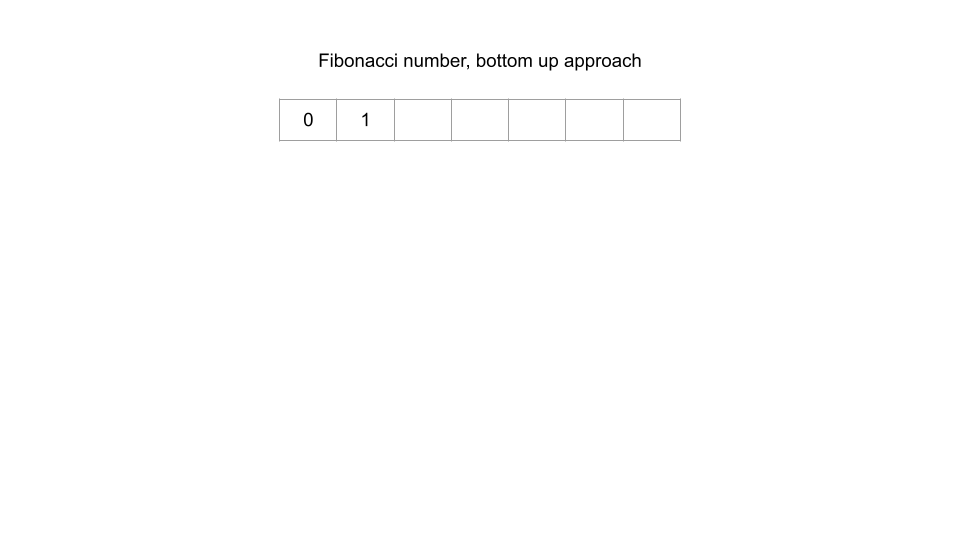
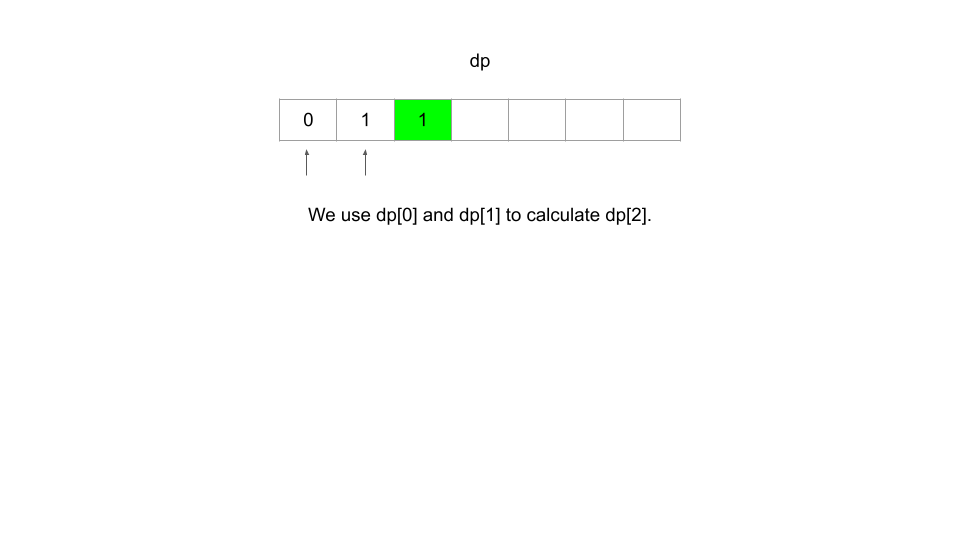
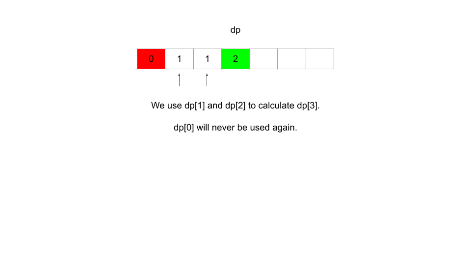
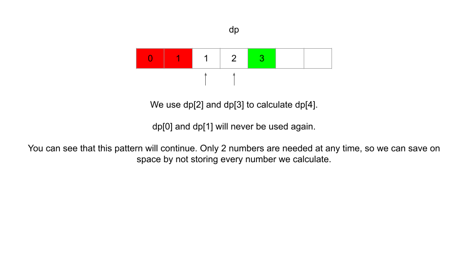

In an earlier chapter when we used the framework to solve Maximum Score from Performing Multiplication Operations, we mentioned that we could use 2 state variables instead of 3 because we could derive the information the 3rd one would have given us from the other 2. By doing this, we greatly reduced the number of states (as we learned earlier, the number of states is the product of the number of values each state variable can take). In most cases, reducing the number of states will reduce the time and space complexity of the algorithm.
This is called state reduction, and it is applicable for many DP problems, including a few that we have already looked at. State reduction usually comes from a clever trick or observation. Sometimes, as is in the case of Maximum Score from Performing Multiplication Operations, state reduction can result in lower time and space complexity. Other times, only the space complexity will be improved while the time complexity remains the same.
State reduction can also be achieved in the recurrence relation. Recall when we looked at House Robber. Only one state variable was used, i i, which indicates what house we are currently at. An alternative way to solve the problem would be adding an extra boolean state variable prev prev that indicates if we robbed the previous house or not, and that would look something like this:
@cache
def dp(i, prev):
if i < 0:
return 0
ans = dp(i - 1, False)
if not prev:
ans = max(ans, dp(i - 1, True) + nums[i])
return ans
return dp(len(nums) - 1, False)
However, we mentioned in the House Robber article: "We certainly could include this state variable, but we can develop our recurrence relation in a way that makes it unnecessary.". By using a clever recurrence relation and base case, we avoided the need for the extra state variable which reduces the number of states by a factor of 2.
Note: state reductions for space complexity usually only apply to bottom-up implementations, while improving time complexity by reducing the number of state variables applies to both implementations.
When it comes to reducing state variables, it's hard to give any general advice or blueprint. The best advice is to try and think if any of the state variables are related to each other, and if an equation can be created among them. If a problem does not require iteration, there is usually some form of state reduction possible.
Another common scenario where we can improve space complexity is when the recurrence relation is static (no iteration) along one dimension. Let's look back at where we started - Fibonacci. Recall that the 𝑖 𝑡 ℎ i th Fibonacci number can be calculated with the recurrence relation:
F(i)=F(i−1)+F(i−2)
Because this recurrence relation is static, to calculate the 𝑖 𝑡 ℎ i th Fibonacci number, we only ever care about the previous two numbers. That means if we are using a bottom-up approach to find the 𝑛 𝑡 ℎ n th Fibonacci number and start from the base cases, we don't actually need to use an array and remember every single Fibonacci number.
Let's say we wanted 𝐹 ( 100 ) F(100). Starting from the base cases, we need to calculate every Fibonacci number from 𝐹 ( 2 ) F(2) to 𝐹 ( 99 ) F(99), but at the time of the actual calculation for 𝐹 ( 100 ) F(100), we only care about 𝐹 ( 98 ) F(98) and 𝐹 ( 99 ) F(99). The other 90+ Fibonacci numbers aren't needed, so storing all of them is a waste of space.




Using only two variables instead, we can improve space complexity to 𝑂 ( 1 ) O(1) from 𝑂 ( 𝑛 ) O(n) using an array. The time complexity remains the same.
if n <= 1: return n
one_back = 1
two_back = 0
for i in range(2, n + 1):
temp = one_back
one_back += two_back
two_back = temp
return one_back
Whenever you notice that values calculated by a DP algorithm are only reused a few times and then never used again, try to see if you can save on space by replacing an array with some variables. A good first step for this is to look at the recurrence relation to see what previous states are used. For example, in Fibonacci, we only refer to the previous two states, so all results before n - 2 n - 2 can be discarded.